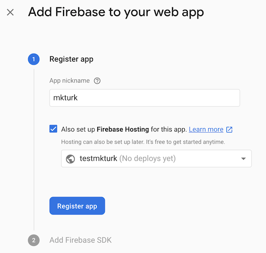

MKTURK INSTALL & SETUP GUIDE
Which means the sidebar is on the left

1. Setup Firebase
MKTURK uses Google Firebase for database, storage and backend service needs. Therefore it is imperative that Firebase is setup correctly. In this section, we will guide you through the steps of setting up Firebase projects, Firebase CLI as well gsutil and gcloud command line interfaces.
Create a Firebase Project
Navigate to Firebase, then click 'Add project'. After following the prompt, you will have created a new project. You can enable or disable Google Analytics but for simplicity, you can disable it now and always enable it later.
Add a Webapp
Now that you've created a Firebase project, you need to add a Webapp since MKTURK is a web-based software. Click on the Web icon (pointed by the red arrow in the image below) on the Firebase project landing page. Once you click, you will be guided through another set of configuration prompt. Name your app as 'mkturk' and check the box to set up Firebase Hosting. 
Install Firebase CLI & Google Cloud SDK
Before continuing to install Firebase CLI, make sure that you have nvm,
node and npm installed as you will need a local Node environment
on your computer to install and use Firebase, gsutil and gcloud CLIs.
Open up your terminal and run:
$ node --version
If you have Node, you should get an output such as:
v8.16.1
If you HAVE Node but NOT v8.x.x, then install the latest Node v8.x.x by running:
$ nvm install 8
If you don't have Node at all, then use the links below to install nvm.
For Windows: nvm-windows
For MacOS/Linux: nvm
Continue ONLY after you have installed Node v8.x.x
Installing Firebase CLI
$ npm install -g firebase-tools
Installing Google Cloud SDK
Follow this guide from Google.
Import Template Database & Storage
2. Setup MKTURK
Text about setting up and installing mkturk
Clone MKTURK Repository
Install Modules
Build MKTURK
Deploy MKTURK
3. Running MKTURK
Walk through the steps of running mkturk.